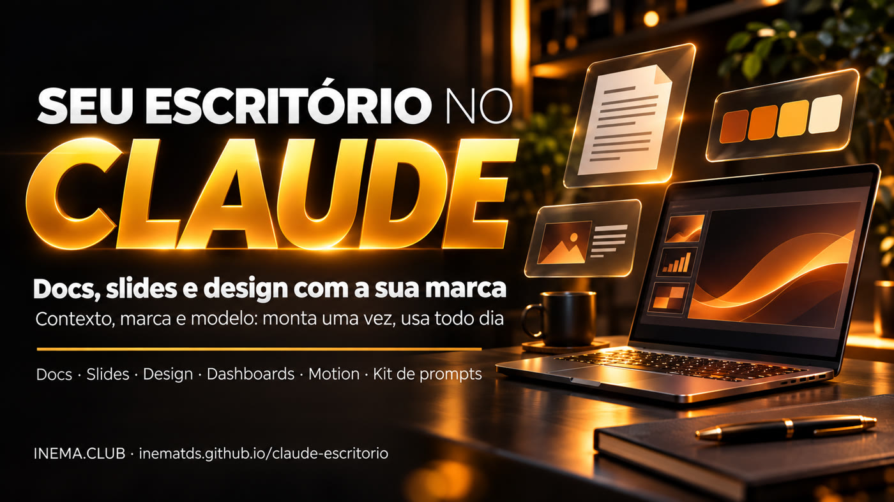

Documento, apresentação e design com a cara da sua empresa, feitos numa conversa — três deles até no plano grátis. Monte uma vez em 4 passos e pare de começar do zero.

Este é um kit gratuito para usar o Claude como escritório: escrever documentos, montar apresentações, criar peças de design e, em alguns planos, painéis de dados e animações. Serve para quem trabalha sozinho ou em equipe pequena e cansou de explicar a marca e o negócio toda vez. O kit traz um modelo de "quem eu sou" para colar num Projeto do Claude, prompts prontos para cada ferramenta e um checklist do que tem em cada plano. Para usar, basta uma conta no Claude (a grátis já serve para Docs, Slides e Design) e um navegador.
Artifacts é o nome que o Claude dá ao que você cria com ele e que fica guardado: documento, apresentação, design, painel. Fica na aba Artifacts (no menu da esquerda do claude.ai, ou direto em claude.ai/artifacts). Você escolhe um modelo ali, ou só pede na conversa. O que nasce é privado até você compartilhar, e sai em PowerPoint, Google Slides, PDF, MP4 ou HTML.
Ferramenta boa sem contexto entrega coisa genérica. O kit começa por um Projeto que diz ao Claude quem você é, o que vende e como fala.
Um design system — o "manual da marca" que o Claude guarda e usa sozinho: cores, fontes, logo e estilo — feito de um PDF, prints do site ou do logo. Uma fonte só já basta para começar; depois tudo nasce com a sua cara.
A primeira proposta ou relatório que ficar bom vira modelo. Os próximos saem dele, com a mesma estrutura e o mesmo visual.
Nomes oficiais: Claude Docs, Claude Slides, Claude Design, Claude Dashboards e Claude Motion. Conferido nas páginas da Anthropic em 04/11/2026.
O documento que você escreve junto com o Claude e com a equipe, ao mesmo tempo.
Apresentações feitas de notas, relatórios ou do que já está na conversa.
Posts, folhetos, one-pagers, páginas de venda e protótipos com o seu design system.
Pergunta em português vira painel que se atualiza, ligado à sua base de dados ou ao sistema de vendas (CRM, como o Salesforce).
Animação curta feita em código, que toca como vídeo e baixa em MP4.
Privado por padrão; você convida com "ver" ou "editar". Edita no celular. A Anthropic diz que já foram feitos mais de 45 milhões de docs, decks e designs no Claude.
Monta uma vez, usa todo dia. Os passos 1 e 2 levam uma tarde; o 3 e o 4 você repete toda semana.
Nada para instalar. Tudo acontece no navegador ou no app do Claude.
A grátis já tem Docs, Slides e Design. Dashboards pede plano pago; Motion, plano Team ou Enterprise. Veja a tabela de planos.
Um PDF ou apresentação de que você gosta, prints das páginas do site ou o logo. Uma fonte só basta para começar.
A proposta, o relatório ou o post que você faz toda semana. É ela que vira o seu primeiro modelo.
Cada passo tem um arquivo pronto no kit. Clique no nome do arquivo, use o botão Copy raw file (ícone de duas folhas) no GitHub, troque o que está entre [colchetes] e cole no Claude.
No claude.ai, abra Projetos (menu da esquerda) › Novo projeto. Dentro do Projeto há um campo de Instruções: cole ali o modelo kit/contexto/instrucoes-do-projeto.md preenchido. Não quer preencher sozinho? Use o prompt que faz o Claude te entrevistar. Para ver como fica pronto, abra o exemplo preenchido (uma consultoria para clínicas). Suba também 2 ou 3 arquivos de referência (apresentação comercial, uma proposta que deu certo).
# kit/prompts/01-entrevista-contexto.md (trecho) Quero criar as instruções de um Projeto no Claude para você trabalhar como meu assistente de escritório. Me entreviste. - Uma pergunta por vez, curta, e espere a minha resposta. - Cubra: quem eu sou; minha oferta; meus clientes e objeções; provas reais; meu jeito de falar; minha marca. - Não invente nada. O que eu não souber fica de fora.
Numa conversa dentro do seu Projeto, anexe o PDF da marca, prints do site ou o logo e peça o design system. Ele extrai cores, fontes, uso do logo e estilo. Sai aproximado: confira as cores uma vez com a folha kit/design-system-modelo.md. Depois, para ver ou editar: nas Configurações do Claude, procure Design systems (no app em inglês fica em Settings › Capabilities).
# kit/prompts/02-design-system.md (trecho) Anexei o PDF da marca. Crie um design system da minha marca. 1. Extraia: paleta (código e uso de cada cor), fontes, logo em fundo claro e escuro, espaçamentos, cantos, estilo de ícone e de foto. 2. Me mostre uma amostra: capa de apresentação, slide, post quadrado, botão. 3. Liste o que você NÃO achou nos arquivos e me pergunte antes de inventar.
Escolha a ferramenta pela peça. O caso que mais economiza tempo: da reunião à proposta. Cole as anotações da reunião, peça pesquisa do site do cliente e uma proposta com o logo do cliente na capa — não o seu.
# kit/prompts/03-slides-proposta.md (trecho) Faça uma proposta em slides para [CLIENTE], com o meu design system. 1. Antes, me mostre o esqueleto e espere o meu OK. 2. Pesquise o site público de [cliente.com.br] e liste 3 perguntas que faltam. 3. Capa com o nome e o logo DO CLIENTE. 4. Problema → o que muda → como fazemos → prazo → investimento → próximo passo. 5. No máximo 10 slides, com notas do apresentador. Não invente número.
Outras peças: documento com o Claude de colega (04-docs-colega.md), post ou página de venda (05-design-peca.md), painel de números (06-dashboard-numeros.md) e animação (07-motion-explicativo.md).
Quando uma peça for aprovada, peça ao Claude para descrever a estrutura dela e salve no Projeto como "Modelo de …" (no Projeto, adicione um arquivo com esse texto; se for curto, cole nas Instruções). Daí em diante é só pedir "igual ao modelo" e mudar o que é novo. Compartilhe com a equipe com "ver" ou "editar".
# kit/prompts/08-reusar-modelo.md (trecho) Nova proposta para [cliente], igual ao "Modelo de proposta". O que muda: [anotações da reunião nova]. Mostre só o que mudou em relação ao modelo antes de montar tudo.
Um painel bom responde a uma pergunta só: "estou chegando lá?". Separe o número que você quer no fim dos números que você consegue mexer hoje.
| Negócio | Número de resultado (o fim) | Números que empurram (o que você mexe) |
|---|---|---|
| Clínica | Consultas feitas no mês | Primeiras consultas agendadas · faltas confirmadas na véspera · retornos marcados |
| Consultoria | Faturamento do mês | Reuniões feitas · propostas enviadas · propostas respondidas |
| Loja online | Pedidos pagos | Visitas · carrinhos abertos · carrinhos recuperados |
| Canal de vídeos | Inscritos | Vídeos publicados por semana · visualizações por vídeo |
Exemplos ilustrativos. Antes de compartilhar o painel, clique em cada número e confira a consulta e a data da última atualização: a Anthropic não publicou taxa de acerto das consultas.
Não sabe o seu plano? Configurações › Plano. Conferido em 04/11/2026 em claude.com/features/artifacts e na central de ajuda do Claude. Planos mudam: confira em claude.com/pricing.
| Ferramenta | Grátis | Pro / Max / Ultra | Team | Enterprise |
|---|---|---|---|---|
| Docs | ✅ sim | ✅ sim | ✅ sim | ✅ sim |
| Slides | ✅ sim | ✅ sim | ✅ sim | ✅ sim |
| Design + design system | ✅ sim | ✅ sim | ✅ sim | ✅ sim |
| Dashboards | ❌ não | 🧪 beta | 🧪 beta | 🧪 beta (o dono liga) |
| Motion | ❌ não | ❌ não | 🧪 beta | 🧪 beta (o dono liga) |
O site separado claude.ai/design fecha em 14/12/2026. Quem tem design system lá migra pela página Artifacts ("Migrate team design systems").
"Faz um slide sobre o meu serviço" sem Projeto = slide de qualquer empresa. Faça o passo 1 antes de tudo.
Número, depoimento ou cliente que não existe destrói a confiança. A regra "não invente, pergunte" já está no modelo de instruções.
Em material para cliente, a capa é dele: nome e logo do cliente. O seu vai no fim.
Dashboards mostra a consulta de cada número. Clique e confira antes de mandar para alguém.
A peça aprovada vira modelo (passo 4). É daí que vem o tempo economizado.
Tudo nasce privado. Convide só quem precisa, com "ver" ou "editar".
Clique no nome do arquivo: ele abre no GitHub. Use o botão Copy raw file (ícone de duas folhas, no canto direito acima do texto) e cole no Claude. Não precisa de conta no GitHub.
| Arquivo | Para quê |
|---|---|
kit/contexto/instrucoes-do-projeto.md | Modelo de "quem eu sou" para as Instruções do Projeto (passo 1) |
kit/contexto/exemplo/instrucoes-clinica.md | O mesmo modelo preenchido com um exemplo fictício |
kit/prompts/01-entrevista-contexto.md | O Claude te entrevista e escreve o contexto |
kit/prompts/02-design-system.md | Sua marca vira design system (passo 2) |
kit/design-system-modelo.md | Folha para conferir cores, fontes e logo |
kit/prompts/03-slides-proposta.md | Da reunião à proposta em slides |
kit/prompts/04-docs-colega.md | Documento com o Claude de colega + rotina da semana |
kit/prompts/05-design-peca.md | Post, folheto ou página de venda com a sua marca |
kit/prompts/06-dashboard-numeros.md | Escolher os números e montar o painel |
kit/prompts/07-motion-explicativo.md | Relatório vira animação de 30 segundos |
kit/prompts/08-reusar-modelo.md | A peça aprovada vira modelo (passo 4) |
kit/checklist-planos.md | O que tem no seu plano + checklist antes de compartilhar |